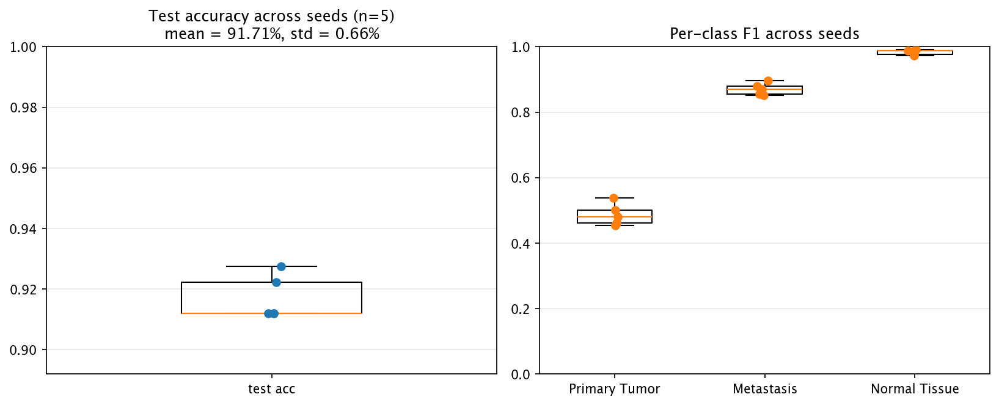
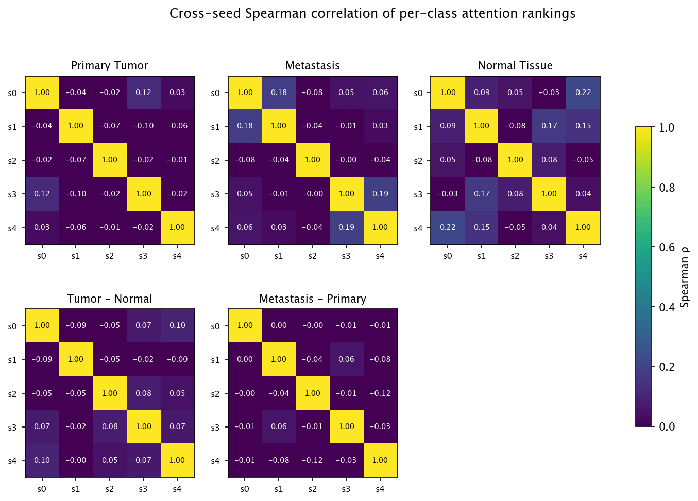

Five seeds, identical architecture and data, different initializations:

We computed each seed's per-class node-importance vector (1000 genes) and asked: do the seeds rank genes in the same order?
| ranking | Spearman ρ | top-50 Jaccard |
|---|---|---|
| Primary Tumor | -0.019 ± 0.059 | 0.186 ± 0.034 |
| Metastasis | 0.033 ± 0.086 | 0.222 ± 0.056 |
| Normal Tissue | 0.064 ± 0.092 | 0.191 ± 0.030 |
| Tumor - Normal | 0.017 ± 0.062 | 0.174 ± 0.023 |
| Metastasis - Primary | -0.026 ± 0.046 | 0.176 ± 0.037 |

stability_consensus_top20.csv file alongside this page
lists the top-20 genes by mean rank across seeds, with the standard
deviation of each gene's rank — that is the publishable list.
Even when two seeds learn slightly different 64-dimensional spaces, the question is whether the shape of the cloud is the same — does each sample land near the same neighbors regardless of seed?

Each seed produces its own Normal → Metastasis pseudotime axis. We align the direction across seeds (flip if anti-correlated), then look at how much each sample's pseudotime varies from seed to seed. Tight error bars mean the model agrees on where this sample sits along the progression axis; large bars mean the sample is ambiguous.

Reproducibility is not a bonus check — it is the difference between an anecdote and a finding. A model that lands on the same gene rankings, the same neighborhood structure, and the same per-sample progression position regardless of initialization is one whose conclusions can be cited. Numbers above tell you, per dimension of the analysis, exactly how much weight each finding bears.